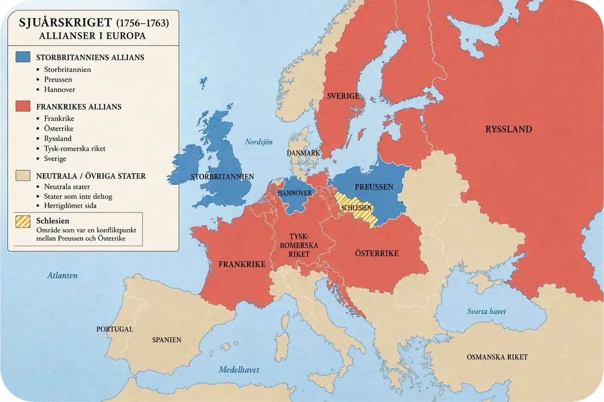
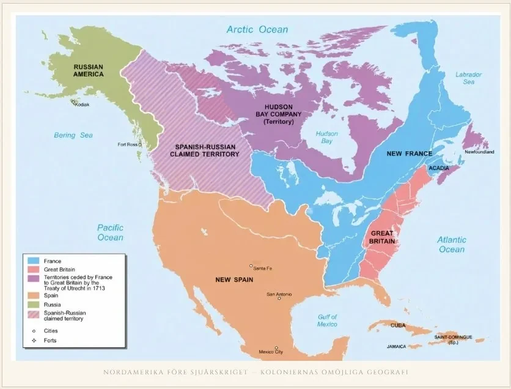
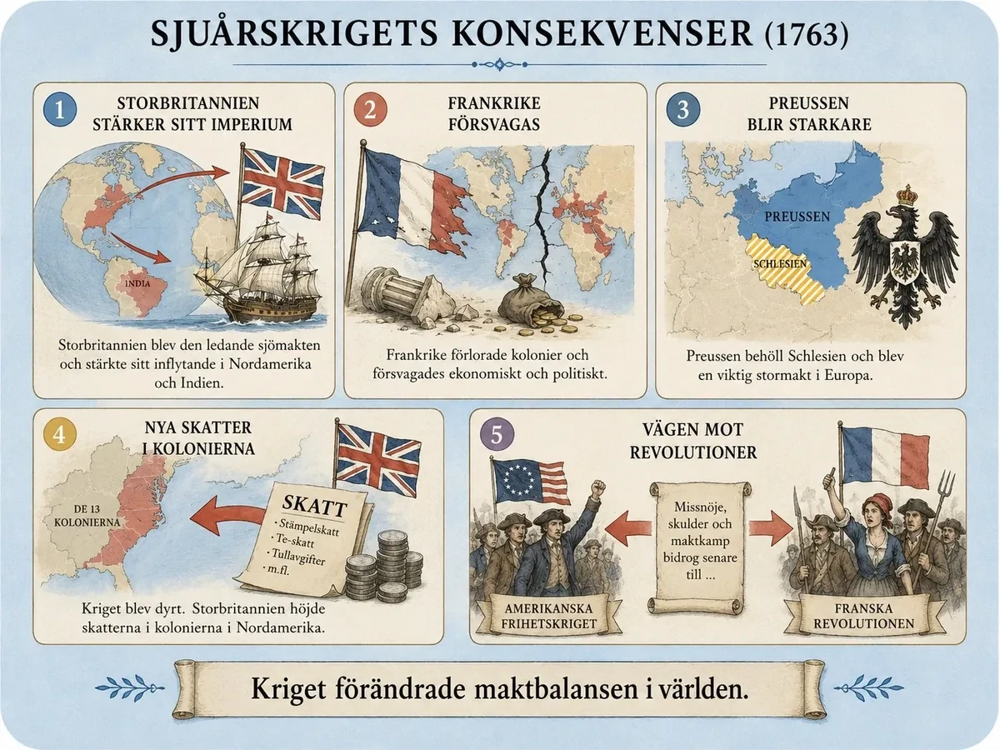

— det första världskriget och fröet till tre revolutioner —
Sjuårskriget varade från 1756 till 1763. Det kallas ibland det första världskriget. Inte för att det var först i historien — utan för att det pågick på flera kontinenter samtidigt: i Europa, i Nordamerika, i Indien och på haven.
Varför bröt kriget ut? Det fanns två orsaker.
Den första orsaken var rivaliteten mellan Storbritannien och Frankrike. Båda länderna ville bli rikare och mäktigare. De ville ha fler kolonier och kontrollera handeln i världen.
Den andra orsaken fanns i Europa. Där stred länderna om områden, inte om kolonier. Preussen hade tagit ett område som heter Schlesien från Österrike. Österrike ville ha tillbaka det. Det gjorde att länderna valde nya allierade. På ena sidan: Storbritannien och Preussen. På andra sidan: Frankrike, Österrike, Ryssland och Sverige.

Sjuårskriget pågick mellan 1756 och 1763 och brukar kallas det första världskriget — inte för att det var det första kriget i historien, utan för att det utkämpades på flera kontinenter samtidigt. Inte bara i Europa, utan också i Nordamerika, Indien och på världshaven. I centrum stod rivaliteten mellan Storbritannien och Frankrike, som båda ville bygga upp större koloniala imperier och kontrollera de viktigaste handelsvägarna.
Samtidigt pågick en maktkamp i Europa. Här handlade det inte om kolonier utan om territorier mellan de europeiska staterna. Preussen hade på senare tid växt fram som en militär stormakt och erövrat området Schlesien från Österrike. Österrike ville nu ta tillbaka det — och det förändrade allianserna i hela Europa. Storbritannien gick samman med Preussen. Frankrike allierade sig med Österrike, Ryssland, Sverige och det Tysk-romerska riket.
Sjuårskriget är egentligen två krig som vävdes samman till ett. Det ena utkämpades i Europa och handlade om land och maktbalans mellan stater. Det andra utkämpades över hela världen — i Nordamerika, Indien, Karibien och på haven — och handlade om kolonier, handel och global dominans. För att förstå varför kriget bröt ut måste man förstå båda, och hur de till slut smälte ihop.
Den globala orsaken: kampen om kolonier och handel. Under 1700-talet fanns en stark föreställning om hur ett land blev rikt och mäktigt, och den hette merkantilism. Enligt merkantilismen skulle en stat sälja mer än den köpte och kontrollera så många kolonier och handelsvägar som möjligt. Kolonier gav råvaror — päls, socker, tobak, bomull — och marknader för färdiga varor, och den som behärskade haven behärskade också ekonomin. I det här systemet var Storbritannien och Frankrike varandras främsta rivaler. Båda byggde koloniala imperier, och båda visste att den andres framgång skedde på deras egen bekostnad. Rivaliteten var därför inte bara en fråga om prestige, utan om vem som skulle äga framtidens världsekonomi.
Ingenstans var den motsättningen tydligare än i Nordamerika. Storbritannien hade tretton tättbefolkade kolonier längs östkusten och ville expandera västerut. Frankrike hade färre bosättare men kontrollerade enorma inlandsområden genom flodnätverket kring Saint Lawrence och Mississippi — och floderna var tidens motorvägar. De två maktsfärerna växte mot varandra, och redan innan det formella kriget bröt ut hade strider börjat i gränslandet. Konflikten var i praktiken oundviklig: två expanderande imperier kunde inte dela samma kontinent.
Den europeiska orsaken: Schlesien och revanschen. Samtidigt pågick en helt annan konflikt i Europa, och den handlade inte om kolonier utan om territorium. Under 1740-talet hade Preussens kung Fredrik II — Fredrik den store — erövrat den rika provinsen Schlesien från Österrike. För Preussen var Schlesien en språngbräda från mellanstor stat till europeisk stormakt; för Österrike, under Maria Teresia, var förlusten en oläkt sårskada. Österrike accepterade aldrig förlusten och förberedde i tysthet en revansch: rustade upp armén och sökte nya allierade. Den europeiska konflikten var alltså i grunden ett revanschkrig innan det ens hade börjat.
Den diplomatiska revolutionen. Det som knöt ihop de två konflikterna — och det mest överraskande i hela förhistorien — var en dramatisk omkastning av allianserna, som brukar kallas den diplomatiska revolutionen. I generationer hade Frankrike och Österrike varit ärkefiender. Nu, inför kriget, slöt de i stället förbund, av det enkla skälet att de delade ett gemensamt intresse: att stoppa Preussens uppgång. Samtidigt närmade sig Storbritannien och Preussen varandra. Britterna behövde en stark kontinental armé som kunde binda upp Frankrike på land medan de själva förde kriget till havs och i kolonierna; Preussen behövde brittiska pengar och stöd för att överleva mellan sina många fiender. Så bildades de två blocken: å ena sidan Storbritannien och Preussen, å andra sidan Frankrike, Österrike, Ryssland, Sverige och flera tyska stater.
Det var i den här punkten de två krigen blev ett. Den brittisk-franska kolonialrivaliteten och den preussisk-österrikiska territorialstriden var från början skilda konflikter med olika orsaker. Men genom allianssystemet kopplades de samman: när Storbritannien band sig till Preussen och Frankrike till Österrike, betydde varje strid i Europa något också för kampen i Nordamerika och Indien, och tvärtom. En lokal tvist om en provins och en global tvist om handel förenades till ett enda, sammanhängande världskrig.
Preussens läge var därmed geografiskt närmast hopplöst — en medelstor stat omringad av Frankrike, Österrike och Ryssland samtidigt. Att kriget trots det inte krossade Preussen direkt, och hur det till slut avgjordes, är en historia i sig — den kan du läsa i djupdykningen Preussen mot alla. Och den globala sidan — haven, kolonierna och East India Company — får du i Haven och kolonierna. Här räcker det att se det avgörande: Sjuårskriget bröt ut därför att två helt olika maktkamper, en om land och en om handel, genom allianserna vävdes samman till världens dittills största krig.
Kriget utkämpades på flera platser samtidigt. Den viktigaste var Nordamerika.
Där hade Storbritannien tretton kolonier längs kusten i öster. Frankrike kontrollerade stora områden längre in i landet, kring de stora floderna. Floderna var viktiga — de användes för transport och för handel med pälsar.
Båda länderna ville ha samma områden. Därför blev det krig. Efter flera års strider vann Storbritannien kampen om Nordamerika.
Samtidigt stred länderna i Europa. Preussen var mindre än sina fiender och var nära att förlora flera gånger — men landet överlevde.

I Nordamerika hade konflikten redan pyrt i flera år. Storbritannien hade tretton kolonier längs östkusten, medan Frankrike kontrollerade enorma områden i inlandet — kring floderna Mississippi och Saint Lawrence. Floderna var viktiga som transportleder och för pälshandeln. Båda stormakterna ville kontrollera samma områden, och det ledde till krig.
Sjuårskriget avgjordes inte på ett slagfält utan på flera, spridda över halva jordklotet. Grovt kan man dela förloppet i två delar: kriget i Europa, där Preussen kämpade för sin överlevnad, och kriget i världen, där Storbritannien och Frankrike gjorde upp om kolonier och hav.
Kriget i Europa — Preussens överlevnadskamp. Preussen var mindre än sina fiender och omringat av dem: Frankrike i väster, Österrike i söder, Ryssland i öster. Kung Fredrik II:s enda chans var snabbhet — att slå en fiende hårt innan de andra hann samlas — och en extremt disciplinerad armé. Han vann flera imponerande slag, men 1759 kom katastrofen, och 1760 ockuperades till och med Berlin en kort tid. Att Preussen ändå överlevde berodde dels på att fienderna inte lyckades samordna sig, dels på ren tur längre fram i kriget. Hela det dramat — Schlesien, slagen och "miraklet" som räddade Preussen — får du i djupdykningen Preussen mot alla.
Kriget i världen — haven och kolonierna. Utanför Europa var det Storbritannien och Frankrike som stred, och där avgjordes kriget av något Frankrike inte kunde matcha: sjömakten. Den brittiska flottan kontrollerade havsvägarna, skyddade brittisk handel och hindrade Frankrike från att förstärka sina kolonier. Det fick avgörande följder. I Nordamerika kunde britterna 1759 erövra Québec, nyckeln till franskt Kanada, och året därpå föll hela den franska kolonin. I Indien stärkte det brittiska East India Company — formellt ett handelsföretag, i praktiken en militär makt — sitt grepp efter slaget vid Plassey. Och i Karibien stod striden om de oerhört lönsamma sockeröarna, vars rikedom byggde på förslavade afrikaners arbete — en mörk sida av vad "kamp om handel" faktiskt innebar.
Det var i Nordamerika kriget avgjordes för Storbritanniens del. Två expanderande imperier hade vuxit mot varandra på samma kontinent: britterna tätt befolkade längs kusten, fransmännen utspridda i inlandet men med kontroll över flodnätverket. När den brittiska flottan väl hade skurit av Frankrike från sina kolonier var utgången given. Frankrikes nordamerikanska imperium gick förlorat, och därmed också mycket av dess ställning som global stormakt. Hur den globala kampen — Nordamerika, Indien, Karibien och Royal Navy — hängde ihop får du i djupdykningen Haven och kolonierna.
Kriget tog slut 1763. Storbritannien var den stora vinnaren. Landet fick mer makt i Nordamerika och Indien och blev världens starkaste sjömakt.
Men segern var dyr. Kriget hade kostat väldigt mycket pengar, och Storbritannien hade stora skulder. För att betala dem höjde man skatterna på kolonierna i Nordamerika. Det gjorde kolonisterna arga — och ledde några år senare till amerikanska frihetskriget.
Frankrike förlorade nästan hela sitt imperium och blev fattigare och svagare. Skulderna och missnöjet bidrog senare till franska revolutionen.
Preussen hade överlevt och räknades nu som en europeisk stormakt. Det blev viktigt långt senare, när Tyskland skulle bli ett land.
Sjuårskriget var alltså inte bara ett krig. Det var en vändpunkt som ledde vidare till nästa stora händelser.

När kriget avslutades 1763 stod Storbritannien som den stora vinnaren. Landet stärkte sitt inflytande i både Nordamerika och Indien och blev den dominerande sjömakten. Men segern var dyrköpt. Kriget hade kostat enormt mycket pengar, och Storbritannien hade stora statsskulder. För att betala dem började man beskatta kolonierna i Nordamerika hårdare — vilket några år senare ledde rakt in i amerikanska frihetskriget.
Frankrike förlorade stora delar av sitt koloniala imperium och försvagades både ekonomiskt och politiskt. De ökande skulderna och missnöjet bland befolkningen bidrog till den instabila situation som decennier senare ledde till franska revolutionen. Sjuårskriget var alltså inte bara ett krig — det var en vändpunkt som banade väg för de revolutioner som skulle förändra världen.
Det här är avsnittets viktigaste del, för det är här Sjuårskriget kopplas till allt som kommer sedan. Freden i Paris 1763 avslutade kriget, men den avslutade ingenting egentligen — den satte i gång tre processer som skulle prägla nästa århundrade. Man kan sammanfatta hela avsnittet i en enda mening: Sjuårskriget skapade vinnare och förlorare vars problem blev revolutionernas orsaker.
Storbritannien vann — och skapade därmed sitt eget nederlag. Storbritannien stod 1763 som den obestridda vinnaren: dominerande i Nordamerika, allt starkare i Indien och herre över haven. Men segern var dyrköpt på ett sätt som få såg direkt. Kriget hade kostat enorma summor, och den brittiska staten satt med väldiga skulder. Logiken tycktes enkel: kriget hade delvis förts för koloniernas skull, alltså borde kolonierna vara med och betala. Så började parlamentet beskatta de nordamerikanska kolonierna hårdare. Men kolonisterna såg det annorlunda. De hade inga representanter i det brittiska parlamentet och menade att man inte kunde beskattas av en församling man inte fått rösta på — no taxation without representation. Missnöjet växte, och drygt ett decennium efter den stora segern ledde det rakt in i amerikanska frihetskriget. Storbritanniens triumf bar alltså fröet till dess första stora förlust.
Frankrike förlorade — och gick mot sammanbrott. För Frankrike var kriget en katastrof. Landet förlorade nästan hela sitt nordamerikanska imperium, försvagades i Indien och tappade global prestige. Men värst var ekonomin. Redan tyngt av krigsskulder valde Frankrike senare att stödja de amerikanska kolonisterna i deras uppror mot Storbritannien — dels för att hämnas nederlaget i Sjuårskriget, dels för att försvaga sin rival. Hämnden lyckades, men priset var förödande: den franska statskassan tömdes fullständigt. De växande skulderna, skattetrycket och missnöjet blev en av de tändande gnistorna till franska revolutionen. Frankrike hjälpte alltså till att skapa en revolution i Amerika och drog därigenom över en revolution på sig själv.
Preussen överlevde — och blev en stormakt. Preussen hade i strikt mening inte vunnit kriget; landet hade nästan förlorat det. Men det hade överlevt mot alla odds och behållit Schlesien, och det räckte för att etablera Preussen som en erkänd europeisk stormakt. Nu fanns det två stora tysktalande makter i Centraleuropa — Österrike och Preussen — och deras rivalitet skulle prägla europeisk politik i över hundra år. Till slut var det Preussen som ledde samlandet av de tyska staterna till en enda nationalstat under 1800-talet. Sjuårskriget var alltså ett viktigt steg på den långa vägen mot Tysklands enande.
Ser man de tre trådarna tillsammans framträder avsnittets hela poäng. Sjuårskriget var inte ett avslutat kapitel utan en startpunkt. Storbritanniens skulder pekar fram mot den amerikanska revolutionen; Frankrikes skulder pekar fram mot den franska; och Preussens uppgång pekar fram mot det enade Tyskland. Ett enda krig i mitten av 1700-talet lade alltså grunden för tre av de största omvälvningarna i den moderna historien — och det är därför det är värt att förstå innan du går vidare.
Laddar övningskort…